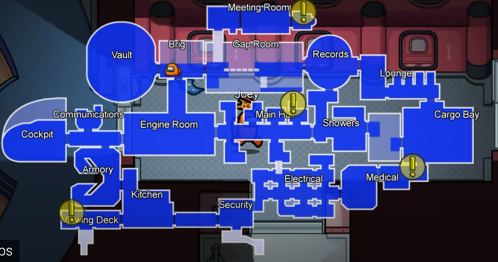

Among Us is a 2018 online multiplayer social deduction game developed and published by American game studio Innersloth. The game was inspired by the party game Mafia and the science fiction horror film The Thing. The designer of the well-lasted game was Marcus Bromander. The game is playable on PlayStation 4, Xbox Series X and Series S, Microsoft Windows, Android, Xbox One, iOS, PlayStation 5, Nintendo Switch The game was so well known that it became a meme which well caused it to become another one of those games that are one shot one kill. Personally i think the game has died because of the memes and the fact that whenever you get imposter after a million rounds everyone leaves.
Polus was the third map added to Among Us, which was released on November 12, 2019. The map is based in a Cold place with labs, tasks, experiment zones, reception and a lava pit for the imposter. The map is different to the first two because it has a place to check if someone has died or not, a room in which you can get locked in with an imposter and with one of the most irratating,annoying and hardest tasks in the game. And the wide range of the map can be dangerous for crewmates.
Airship is so far the latest map in the game and was released on 31st march 2021. This map is well known because it was also in the henry stickman game. This map has the most places to go to , the exact number is 19 rooms. This map has a kitchen, cockpit and a vault with a massive Gem in it . There is also alot of places to corner people in the map and which could help you take down the crewmates. There are many weird tasks in this map such as finding internet connection, making food, dressing up as a manequin taking out the trash and cleaning the Massive Gem but this is just scratching the surface in fact there is a total of 19 tasks in this map. The airship is Liked By both imposter and crewmates.
The Skeld is the 1st map and is the third-largest map in the game, the smallest being MIRA HQ, the second-largest being Polus, and the largest being The Airship. There are 14 vents and also 14 locations, but they are not evenly distributed. The Skeld's name was based on the Swedish word for 'Shield', possibly due to the ship's shape.The Skeld has the most visual tasks, being: Clear Asteroids, Empty Garbage/Chute, Prime Shields, and Submit Scan. The skeld was released on june 15 2018 and then more than a year later Mira HQ was released. Skeld is also known as the G.O.A.T (Greatest Of All Time) because it is one of the first maps in the entire game.
MIRA HQ is the only map without Security, but in return, it is the only map with Doorlogs. The vents on MIRA HQ are interconnected, meaning that An Impostor can use them to travel around the map more efficiently, unlike other maps. It is also the smallest map in among us and was released in August 2019. But the map is also the least popular map because of not having security like the other maps but for imposters it is thier favorite map.